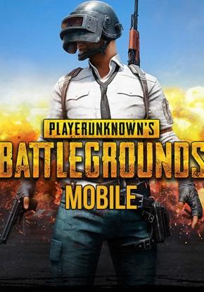
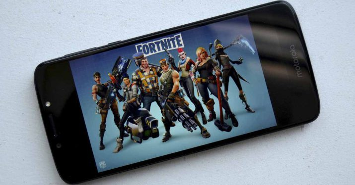

PUBG Mobile

PUBG Mobile es la versión para dispositivos móviles del popular PlayerUnknown's Battlegrounds, el juego
que popularizó el género battle royale.
Hasta el momento, muchos titulos habían copiado la premisa de PUBG en móviles, pero es ahora cuando la
obra original da el salto a dichos sistemas. La premisa es la misma que en la obra original: ser el
único superviviente en una refriega contra otros jugadores online, con un escenario que se acota de
forma progresiva. Siendo hábiles con las ármas y ávidos en la táctica, podremos llegar a cenar pollo.
| Requisitos |
| Systema |
Android 5.1.1 o superior |
| RAM |
2GB |
| SO |
Android / IOS |
| Espacio libre |
2GB |
Fortnite

Fortnite Battle Royale es un videojuego gratuito perteneciente al género de Battle Royale desarrollado y
publicado por Epic Games. Fue lanzado como un título con acceso anticipado para Microsoft Windows,
macOS, PlayStation 4, Xbox One el 26 de septiembre de 2017, para iOS el 2 de abril de 2018, y para
Android el 9 de agosto. Fue lanzado en la consola Nintendo Switch el 12 de junio de 2018.1 Es un
spin-off de Fortnite: Salvar el Mundo, un cooperativo juego de supervivencia con elementos de
construcción.
| Requisitos |
| Systema |
Android 5.0 o superior |
| RAM |
3GB |
| SO |
Android / IOS |
| Espacio libre |
2GB |
VainGlory
Desarrollado por Super Evil Megacorp, VainGlory se posiciona como el principal MOBA de referencia en
dispositivos móviles. Llegado después de cosechar éxito en iOS, aterriza en Android para asentar las
bases de este género multijugador y convertirse en un referente.
| Requisitos |
| Systema |
Android 5.0 o superior |
| RAM |
3GB |
| SO |
Android |
| Espacio libre |
3GB |